Data Analyst Portfolio
Ali Rabie Mahmoud
Junior Data Analyst building business-focused dashboards, statistical models, and end-to-end analytics workflows.
I turn raw data into clear decisions using Python, SQL Server, Power BI, Tableau, Excel, and statistical analysis. My work spans e-commerce, marketing, telecom, finance, and sales analytics.
Core stack
Python · SQL · Power BI · Tableau
About
Business-minded analytics with a statistical foundation
Junior Data Analyst with a strong academic background in educational psychology and statistics, supported by a 3.6 GPA and professional training through NTI and ITIDA-related learning tracks. I work across the full analytics lifecycle: cleaning and transforming data, modeling relationships, segmenting customers, and presenting insights through executive dashboards.
Skills
Tools and methods I use
Programming & Databases
BI & Visualization
Analytics & Statistics
Professional Skills
Featured Projects
Selected analytics work from GitHub
Python · SQL · Power BI
Crunchbase Startup Ecosystem Analytics
Built an end-to-end analytics pipeline for Crunchbase 2013 startup data, combining Python cleaning, SQL Server modeling, and Power BI dashboarding to reveal funding trends, exit outcomes, and geographic opportunity.
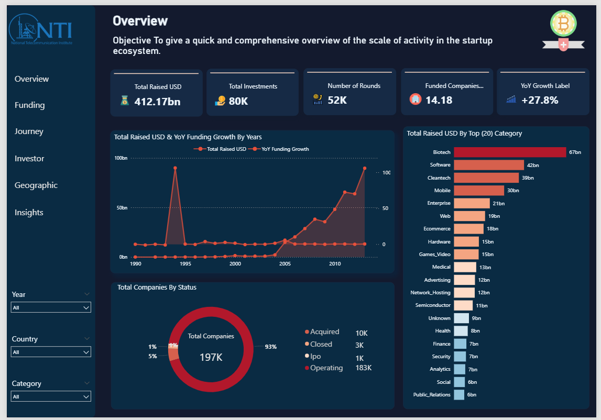
1.45M+ records52K funding rounds$419.7B total funding
View repository ↗
Python · SQL · Power BI
Olist E-commerce Analytics
Built an end-to-end analytics pipeline on 100K+ Brazilian marketplace orders, combining Python cleaning, SQL modeling, and Power BI dashboards to reveal 207% YoY growth and revenue risk from churn.
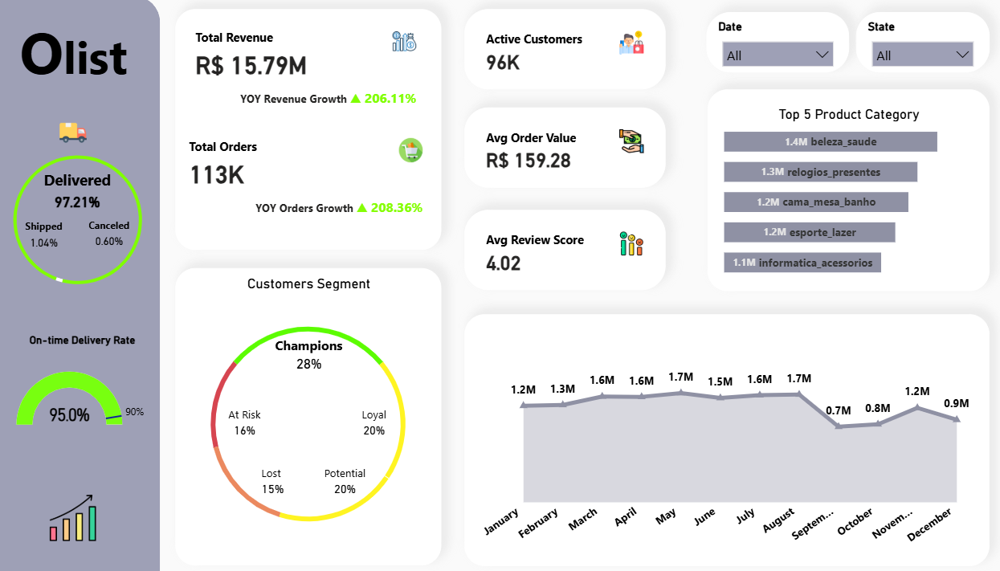
100K+ orders207% YoYR$1M+ churn risk
View repository ↗
Excel · Analytics Dashboard
Telecom Customer Churn & Call Center Analysis
Analyzed customer churn patterns and call center performance to identify at-risk customer segments, contract-related churn patterns, and service issues affecting retention decisions.
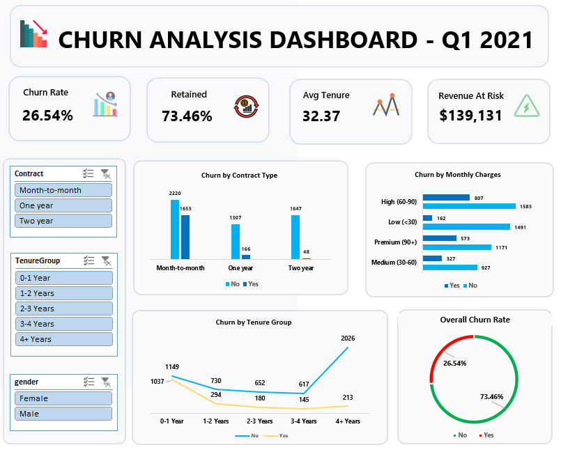
7,043 customers42.7% churn in month-to-month$1.67M risk
View repository ↗
Power BI · Marketing Analytics
Marketing Campaign Performance Dashboard
Designed a Power BI dashboard to connect campaign spend with revenue outcomes, highlight negative ROI initiatives, and prioritize the most profitable marketing channels.
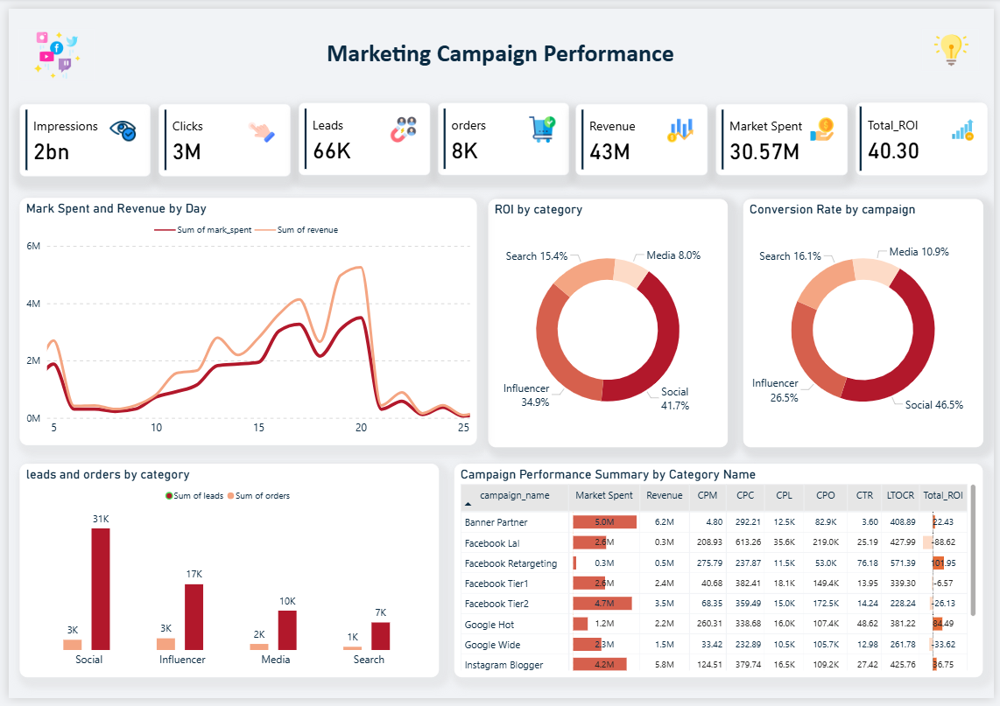
ROI optimizationChannel analysisConversion tracking
View repository ↗
Power BI · Retail Analytics
Retail Supply Chain Reporting
Created an interactive sales performance dashboard on $2.3M in retail sales across 793 customers and 10K orders to surface profitability drivers, market gaps, and customer value patterns.
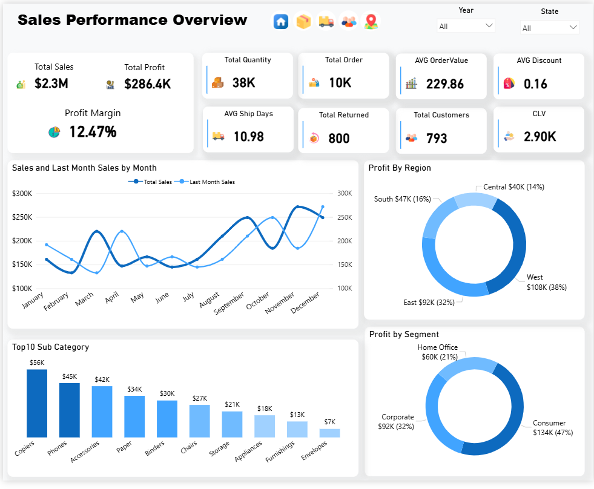
$2.3M sales793 customers10K orders
View repository ↗
Power BI · Sales Analytics
Europe Sales Performance Dashboard
Transformed a large European retail dataset into a four-year monitoring system, enabling revenue, cost, and profit analysis across markets, channels, and product lines.
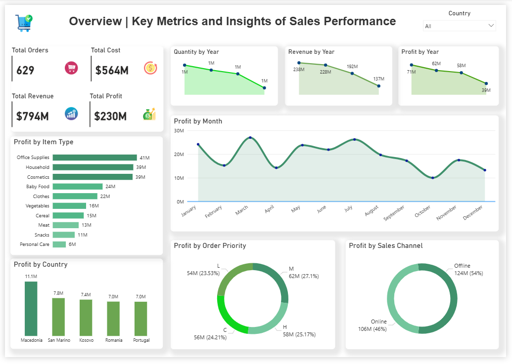
4-year viewRevenue / Cost / ProfitInteractive KPIs
View repository ↗
SQL Server · HR Analytics
HR Attrition Risk Profiling
Used SQL Server to profile attrition risk across 4,653 employees, helping identify the employee segments most likely to leave and the factors behind costly turnover.
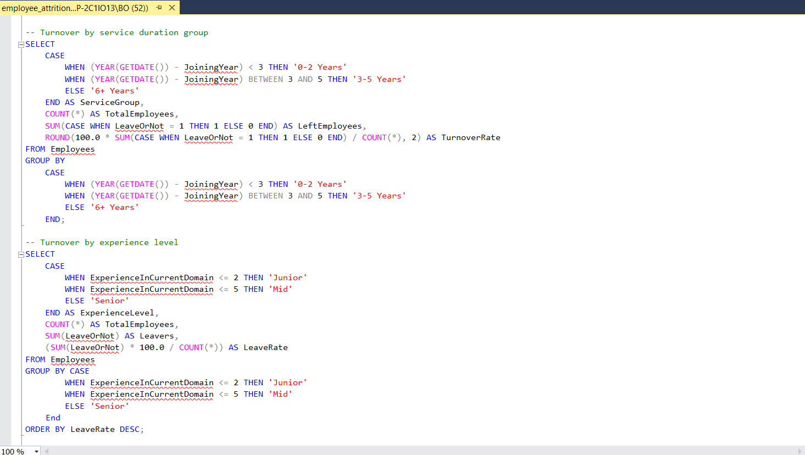
4,653 employeesRisk profilingSQL analysis
View repository ↗
Python · Statistical Modeling
Madrid Real Estate Price Analysis
Built predictive regression models on 21,177 Madrid properties across 146 districts to quantify price drivers and enable data-driven property valuation decisions.
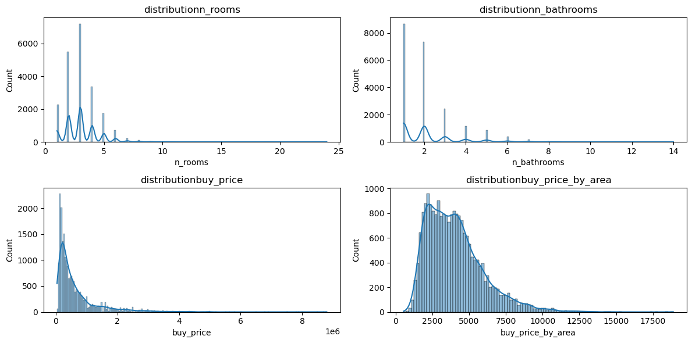
21,177 propertiesR² = 0.87146 districts
View repository ↗
Python · Quantitative Finance
Stock Performance & Risk Analysis
Quantitative analysis of major tech stocks (AAPL, MSFT, TSLA) vs. Gold and S&P 500 using OLS regression, Bollinger Bands, and correlation analysis to profile risk-return tradeoffs.
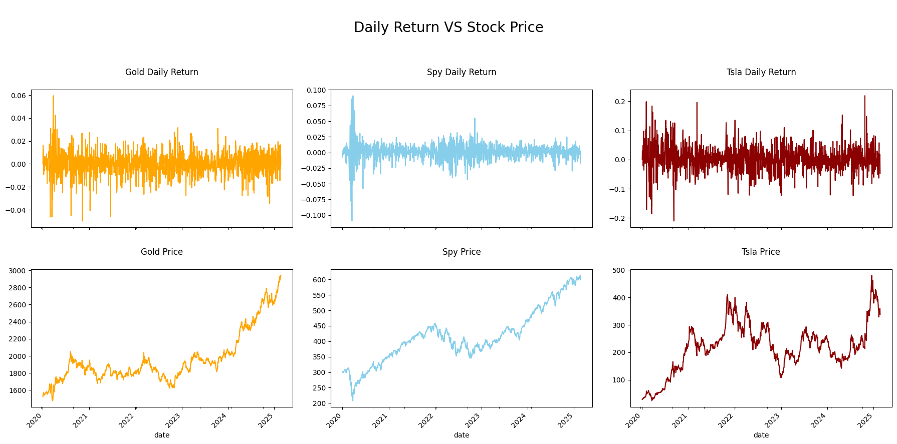
1,292 trading daysTSLA +1,078%Beta & Volatility
View repository ↗
Python · EDA
Northwind Sales Performance Analysis
End-to-end EDA on 830 deduplicated orders from the Northwind dataset, uncovering revenue drivers across geographies, customers, and products with time series and segmentation analysis.
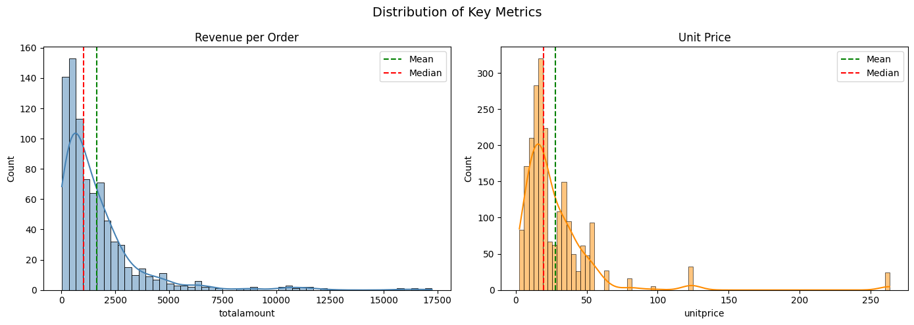
830 orders~$1,986 avg order valueJul 2012 – May 2014
View repository ↗
Experience & Training
Hands-on learning and professional development
Mar 2026 – May 2026
Data Analytics Intern — National Telecommunication Institute (NTI)
Completed intensive onsite training in SQL, Python, R, Excel, Tableau, and Power BI. Applied end-to-end analytics workflows through projects in e-commerce, healthcare, and finance.
2024 – 2026
Courses & Certifications
ITIDA Data Analysis Track, Data Analysis with Python (freeCodeCamp), Data Literacy Professional Certificate (DataCamp), Building Business Reports Using Power BI (365 Data Science), and Thinking Like an Analyst (Maven Analytics).
Certifications
Verified credentials
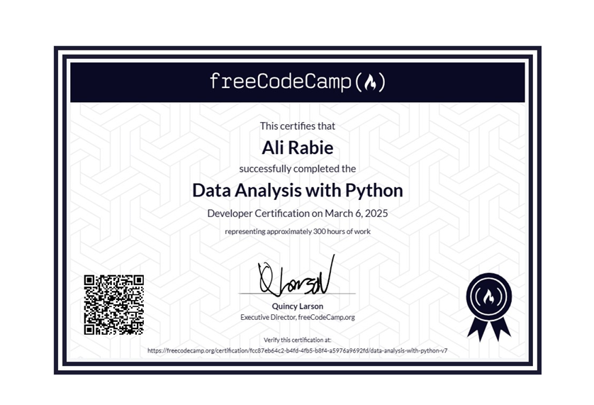
freeCodeCamp
Data Analysis with Python
Mar 2025 · 300 hours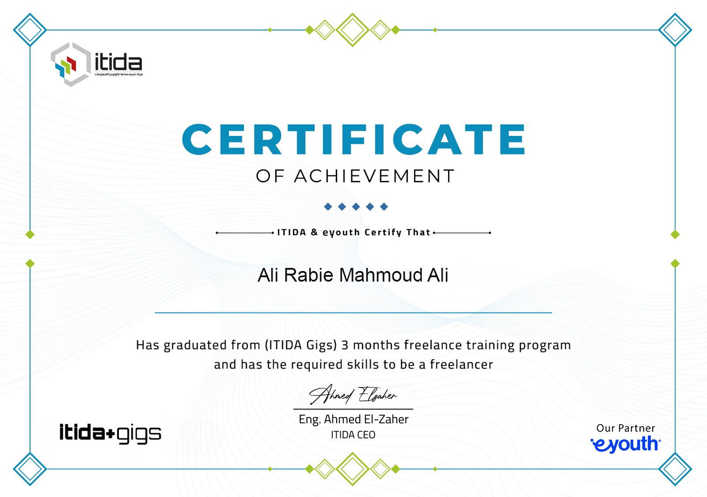
ITIDA — Information Technology Industry Development Agency
Data Analysis Track
Feb 2026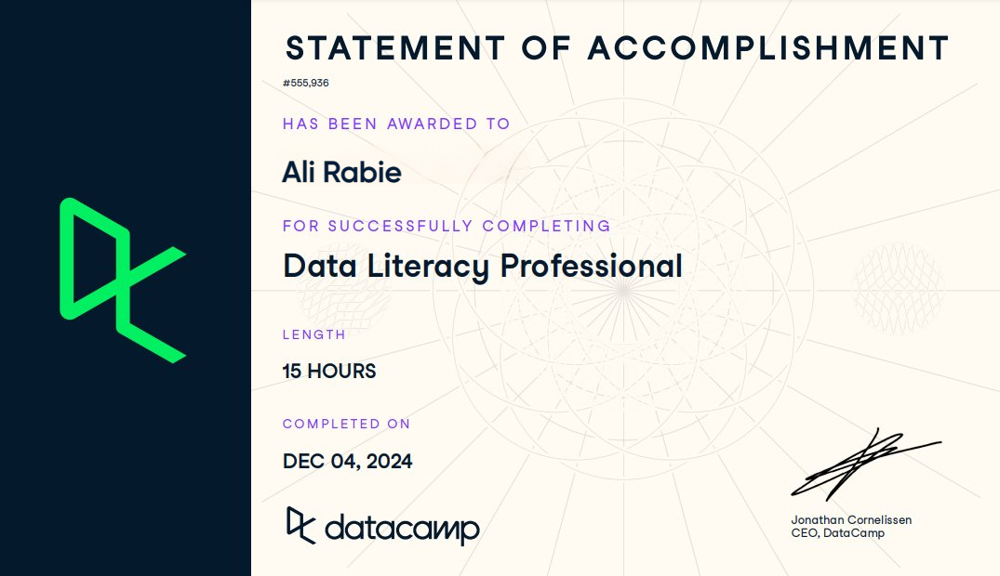
DataCamp
Data Literacy Professional Certificate
Dec 2024 · 15 hours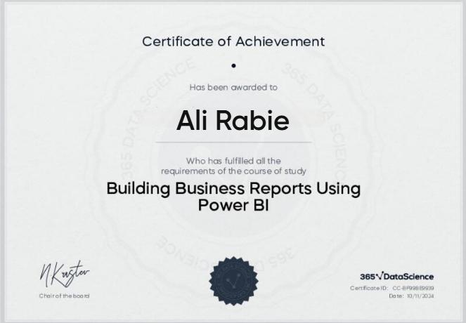
365 Data Science
Building Business Reports Using Power BI
Nov 2024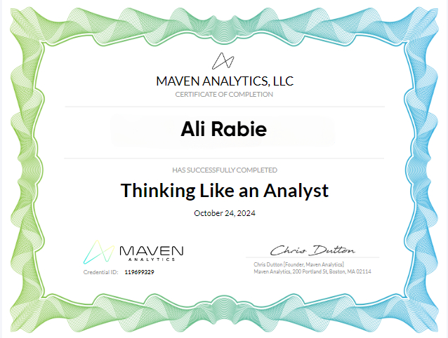
Maven Analytics
Thinking Like an Analyst
Oct 2024Education
Academic background
Bachelor of Educational Psychology & Statistics
Al-Azhar University, Cairo
Sep 2019 – Aug 2023
3.6 / 4.0
GPA
Statistics
Probability · Research Methods · Behavioral Data Analysis
Languages
Arabic (Native) · English (Good)
Contact
Let’s connect
If you’re hiring for a data analyst role, I’d be happy to discuss dashboards, analytics projects, and business insight work.